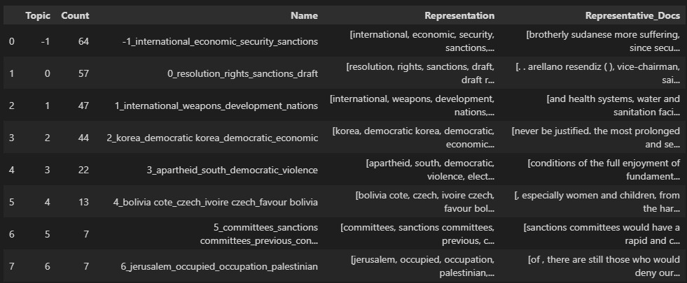
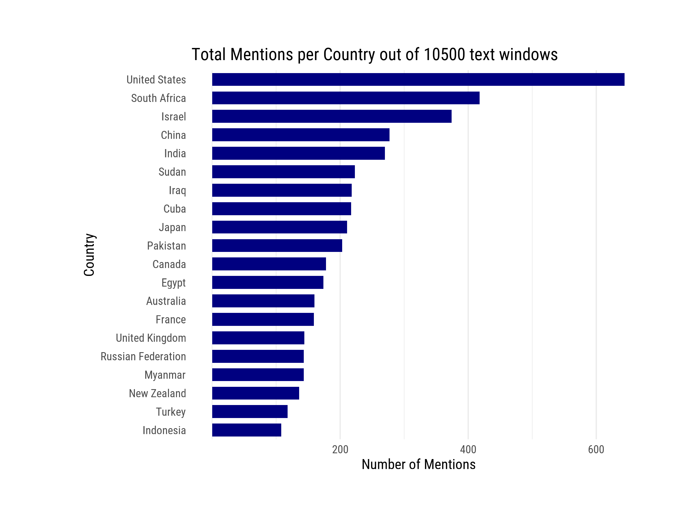
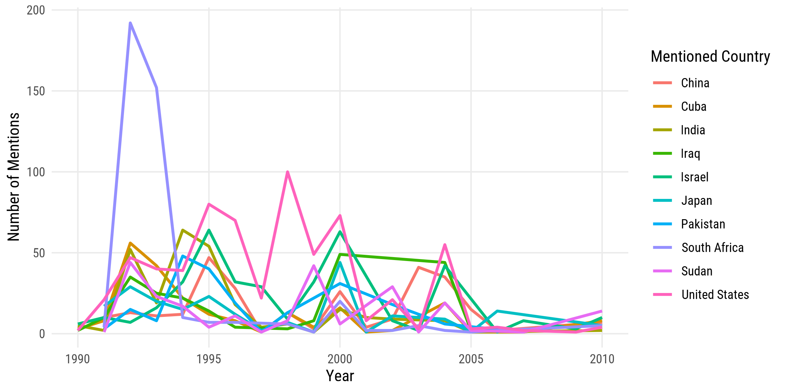
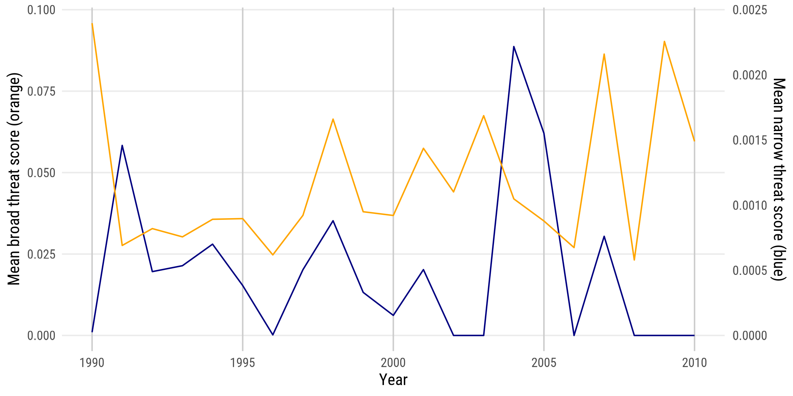
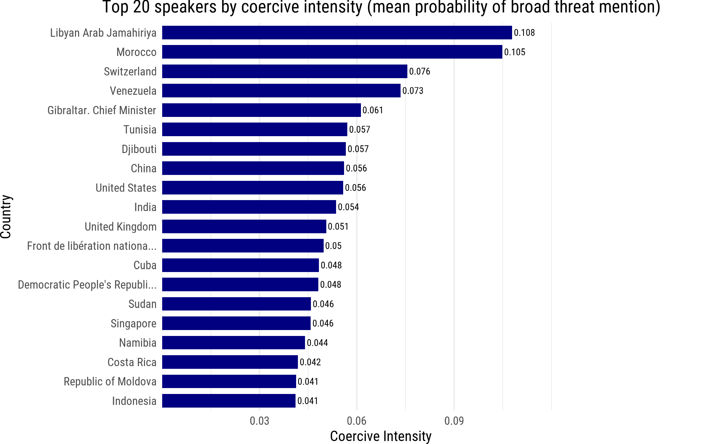
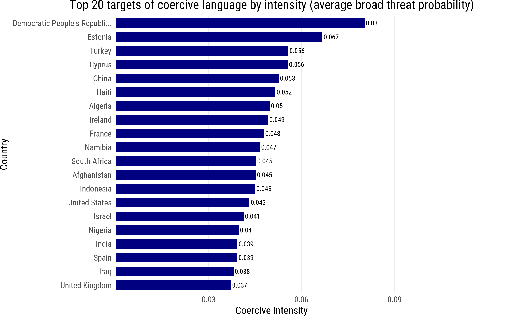
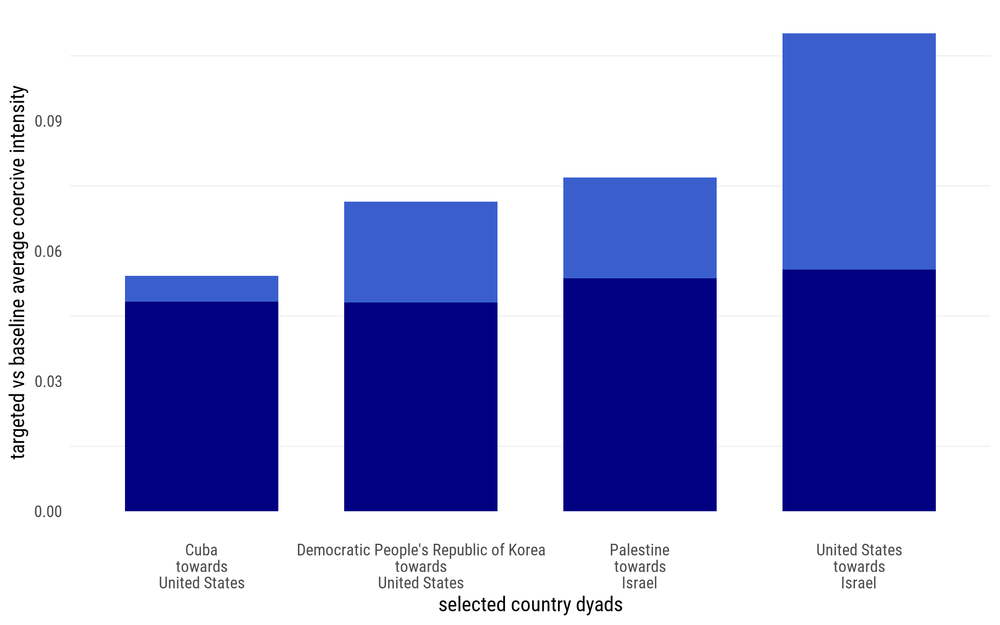

MSc (2025) - Webscraping and Text Mining
Project at a glance
Project date: Fall 2025 - Spring 2026
Research question: How do you detect threatening language in a diplomatic setting? Which countries’ representatives use threatening or coercive language in mentioning other countries, and how does this line up with geopolitical events?
Methodology: Webscraping, text extraction from pdfs, text mining, topic modeling, zero shot classicification with customized entailment score modeling for threat detection
Programs used: R (rvest, chromote for webscraping and text mining with RegEx), Python (text extraction, topic modeling, zero shot classification), Github (version control in group settings)
Output: Aggregate statistics for coercive language use on country-level. Dataset of ~10500 mentions of countries in UN speeches and their adjacent sentences, scored on threatening, coercive and sanction-related language in the period 1990-2010.
Relevance: I apply my knowledge of webscraping by finding a way to methodologically find data on UN speeches and automatically download the required speech notes. I then combine certain text-processing methods like RegEx rules, topic modeling with BERTopic and Zero Shot Classification (BART-facebook-mnli) for extracting and classifying text. This project highlights my familiarity with working with text data.
Scope
This project is a part of the research & policy seminar in Data Science and Machine Learning, where we were given free choice in project topics. Our group of three chose UN data because it grants us an opportunity to make a structural, informative dataset out of webscraped data. By using advance data science methods, we show how there is still opportunity to create useful data in an already data-driven world to fill research gaps.
Methodology - Webscraping
Speech Record IDs The webscraping begins by extracting record IDs from the JSON endpoints of the UN’s digital library search page, looping over search pages by constructing links per country filter and per year. This was previously done with rvest directly from the search page, but the website was changed to load HTML in the back-end, which rendered rvest unuseable for this part. The output is a list of all revelant speech identifiers, each representing one speech made by one representative in a UN general member’s assembly meeting.
Speech Metadata We use the speech record IDs to construct new links, each leading to the speech’s information page. From this page, we extract the relevant metadata, including the speaker’s name, country that they represent, the date of the speech and importantly the meeting ID. This data is appended to the list of speeches, resulting in a metadata dataframe.
PDF Downloading From the meeting ID, we build download links that automatically download each meeting pdf and save it in a folder. This results in 1045 pdfs from which the text can be extracted and coupled to one or more speeches.
Methodology - Text Extraction
Meeting text extraction from pdfs We use the python package PyMuPDF to extract text out of all the pdfs, and append each full meeting text to the relevant speech. While it may not have been the most efficient solution to append each full meeting to each speech, as there are often multiple speeches in a meeting, it was not a time-consuming enough processing task to make a more dynamic solution preferable.
Speech text extraction from meeting text We return to R and use RegEx code to extract the relevant part of a speaker’s speech out of the full meeting text. This is done by allowing for multiple patterns to start and end the text, which all involve the way the UN structures their speech notes, denoting the speakers name, optionally a text in brackets and then a colon. The pattern uses the relevant speaker’s name from the metadata and matches the following examples for a speaker called “Smith” among others:
- Smith:
- Mr. Smith:
- Judge Smith (spoke in Spanish):
- Dr. Smith (United Kingdom) (spoke in Japanese):
We additionally normalize diacritics in our pattern matching code, so that examples like García (official speaker name) and Garcia (in UN meeting notes) will still get matched.
We find that this kind of pattern recognition gives us the most success with extracting speeches, while minimizing the false positives which would give us non-relevant text.
Country mention extraction from speech text For each unique speech, we search for a mention of a country from a list of countries of the world, to extract mentions. We extract ~12000 mentions.
Context window extraction For each mention, we take the two sentences around it, ending up with a context window. After deleting duplicates and non-relevant mentions (like lists of voting resolutions), we end up with ~10500 valid context windows.
Methodology - Analysis
For an exploratory analysis, we use topic modeling, which can be user unsupervised or weakly supervised by encoding text data into vectors, reducing dimensionality and then clustering texts with similar language together into groups, and assigning topics on them based on common words in that cluster.
We use BERTopic and make it weakly supervised (deleting filler words and adding a suggested coercive language keyword group) on a keyword-based subset of context windows, after which it finds a topic on sanctions, security and threats for 64 out of 200+ windows. While this is a fun exploratory analysis, it does not mean that the windows in this topics are necessarily about sanctions, coercing or contain threats. They just share the same language.

To detect threatening language, we use Zero Shot Clasification. This method uses a pretrained large language model to score our relevant context windows on a number of labels that have to do with threatening language or not. The labels can be seen as hypotheses, as it asks the model for each context window: “Does this text entail {Label_Threat}” Where Label_Threat is: “issuing or endorsing a threat, deterrent warning, or conditional punishment” for example. The entailment score can be seen as a model’s relative confidence that the text entails the label. It is a score between 0 and 1, where a more threatening language would imply a higher score on the threat label, but possibly a lower score on a non-threat label like procedural or descriptive language.
To filter out false positives, we construct a narrow threat score which takes the threat score and subtracts the best contender out of the non-threat labels, to arrive at a new threat score. It then only keeps these threat scores if there is a conditional (if, when, else, etc.) and a consequence (relat…, consequence, then, etc.) present in the context window. We also construct a broader threat score that only takes a wider view of threatening language and filters out procedural language. These two scores are called threat_narrow and threat_broad in the final results.
Results - Mentions
The top 20 mentioned countries in the United Nations are shown below, beside the mentions over time for a few highly mentioned countries. Since our dataset spans 1990-2010, we can relate the amount of mentions to geopolitical events that were subject to discussion in the UN General Member’s Assembly in this time period. This can explain the mentions of South Africa during the abolition of apartheid,


Results - Threat Detection




Limitations and Suggestions for Further Work
Workflow setup
The diagram below visualizes our workflow. The code consists of two main files, from which all the other files that contain functions are run. Text extraction from pdfs and the analysis were best possible with python, which is why we opted for creating two main files, which build up on each other. All functions save data intermittently, so that progress can be stopped and started at command. This was needed, since runtimes for webscraping and threat analysis were very long. All data is saved under the data_files folder, and all code uses relative pathing to prevent any path conflicts when sharing code over github on different machines.
Seminar_UN_Final/
├─ scripts/
│ ├─ Config.R
│ ├─ Main_1_Data_Preparation.R
│ ├─ 1_Webscraping_Function_1_RecordID.R
│ ├─ 1_Webscraping_Function_2_Metadata.R
│ ├─ 1_Webscraping_Function_3_PDFs.R
│ ├─ 2_TextExtraction_Function_1_Text.py
│ ├─ 2_TextExtraction_Function_1_Text.R
│ ├─ 2_TextExtraction_Function_2_Speech.R
│ ├─ 2_TextExtraction_Function_3_Mentions.R
│ ├─ Main_2_Analysis.py
│ ├─ Analysis_3_Function_2_BERT.py
│ ├─ Analysis_3_Function_3_Threat_Streaming.py
│ └─ Analysis_3_Function_4_ThreatViz.py
│
├─ data_files/
│ ├─ pdfs/ …
│ ├─ un_pdf_text.csv
│ ├─ un_speech_level_data.parquet
│ ├─ country_windows_sentences.parquet
│ └─ threat_data_dataset/ …
│
└─ output/
└─ threat_viz/ …